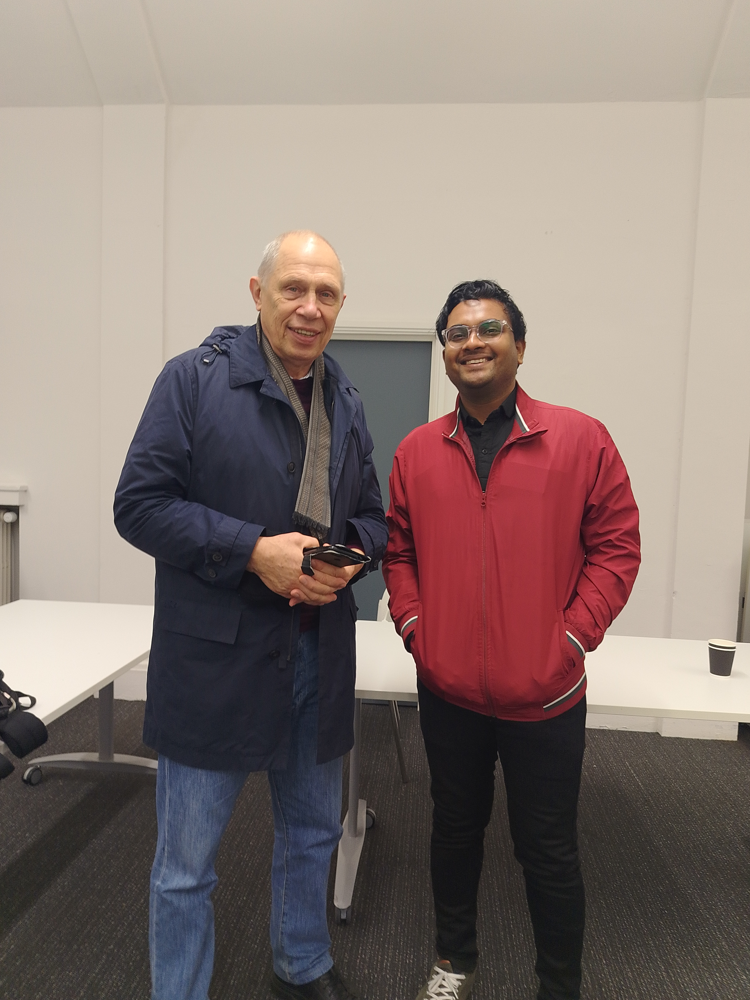
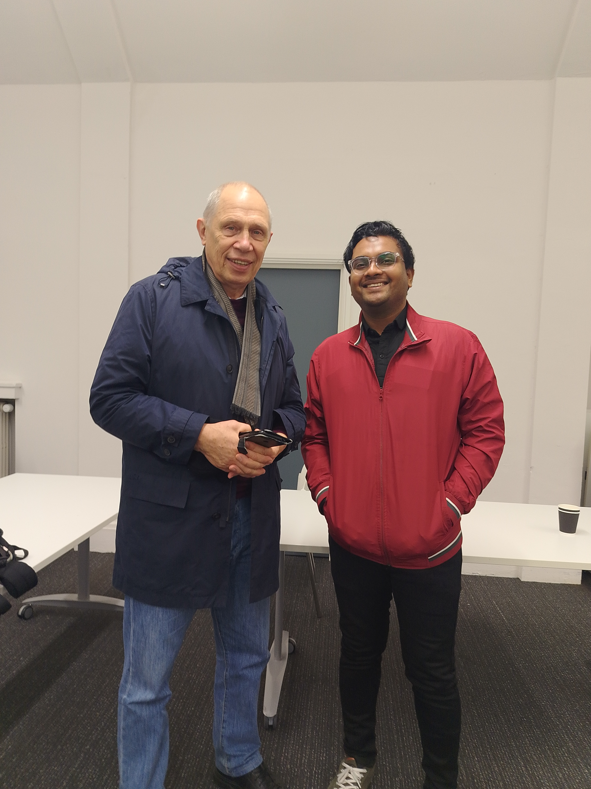

The University of Lancaster’s funded Winter School has become a beacon for aspiring mathematicians and professionals looking to deepen their understanding of advanced mathematical concepts. This two-week program stands out for its ability to blend academic rigor with practical applications, drawing participants from across the UK and beyond.
This year’s Winter School featured a robust agenda, with lectures delivered by some of the leading mathematicians in the UK. Participants were introduced to cutting-edge research, innovative problem-solving methods, and the practical applications of mathematics in various fields, including artificial intelligence, finance, and sustainability.
Highlights of the Program
- Expert-Led Sessions: Professors and industry leaders covered topics such as advanced calculus, stochastic processes, and mathematical modeling.
- Hands-On Workshops: Interactive sessions focused on data analysis, optimization algorithms, and interdisciplinary applications.
- Collaborative Projects: Teams tackled real-world problems, such as predictive modeling for climate change and resource optimization in supply chains.
- Networking Opportunities: Informal meetups, panel discussions, and coffee breaks facilitated connections among participants and mentors.
Key Takeaways
The Winter School was designed to leave participants with actionable insights and skills. Here are some of the most impactful learnings:
- Understanding the practical implications of mathematical theories in fields like AI and big data.
- Learning innovative approaches to tackling complex problems through interdisciplinary collaboration.
- Exploring the role of mathematics in addressing global challenges, from climate change to sustainable development.
Participant Testimonials
"This program was truly transformative. The lectures and workshops helped me see mathematics in a whole new light." – Alex Carter, MSc Student
"Collaborating with such a diverse group of participants was inspiring. I left with not just knowledge but also lasting connections." – Priya Singh, Data Analyst
Photo Gallery
 

Conclusion
The funded Winter School at the University of Lancaster is more than just an academic program—it’s a platform for growth, innovation, and collaboration. For anyone passionate about mathematics, this program offers an unparalleled opportunity to learn from the best and apply knowledge to solve real-world problems.
If you’re considering attending next year, be prepared for a journey that will challenge and inspire you in equal measure. The Winter School is a testament to the power of mathematics in shaping our world.